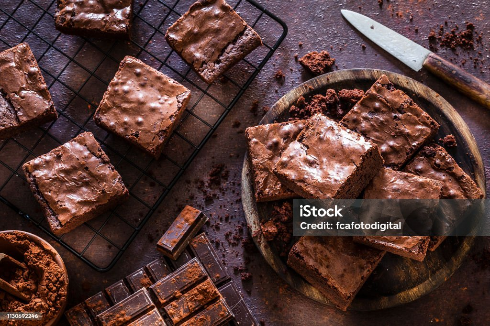

Delicious Brownie Recipe
Delicious Brownie Recipe
Ingredients
Here’s what you’ll need to make these brownies:
- 1 cup butter, melted
- 2 cups sugar
- 1 cup cocoa powder
- 1/2 tsp salt
- 4 large eggs
- 1 cup all-purpose flour
- 1/2 tsp baking powder
- 1 tsp vanilla extract
Instructions
Follow these steps to make perfect brownies:
- Preheat the oven to 350°F (175°C). Grease a 9x13-inch baking pan.
- In a large bowl, combine melted butter, sugar, and vanilla. Mix well.
- Beat in the eggs one at a time until smooth.
- In a separate bowl, sift together the cocoa, flour, baking powder, and salt.
- Gradually add the dry ingredients to the wet mixture, stirring until combined.
- Pour batter into the prepared pan and spread evenly.
- Bake for 20-25 minutes or until a toothpick inserted comes out with a few moist crumbs.
- Allow to cool before slicing. Enjoy your delicious brownies!
Bonus Tips
Tip: To make these brownies extra fudgy, reduce the baking time slightly! Don't reduce it by a lot, no one wants raw brownies!
Find more dessert recipes here!
Download Another Recipe PDF